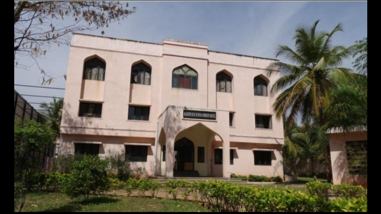

There are 3 hostels:
-
Syed Ahmed hostel is for 1st year students.
-
Maulana Azad hostel for 2nd year students.
-
Tippu sultan hostel for 3rd and final year students.
-
The rooms are big in Tippu sultan hostel and one can take single room as well and in other hostels there is 3 sharing rooms.
-
External Expense : Rs.4000 - Rs.7000
-
Campus Life: The campus life is awesome.It us located around 50kms from Bengaluru city.
-
The college conducts workshops.There is no discrimination.
All are treated equally be it any caste religion.
-
GCE college has more boys then girls.
-
There is a girls hostel as well for the ladies